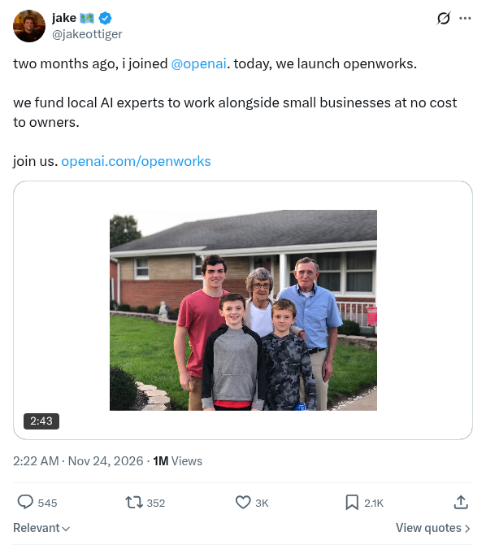

오픈워크스는 정확히 무엇인가?

오픈AI(OpenAI)는 지역 인공지능 전문가에게 비용을 대고, 소상공인은 돈을 내지 않고 도구 활용법을 배우는 방식이라고 밝혔습니다. 공동 창립자 그렉 브록먼(Greg Brockman)도 같은 내용을 올렸습니다.
이 글이 확인한 게시물 가운데 가장 먼저 올라온 것은 회사 공식 계정이 아니라 오픈워크스 담당 직원 제이크 오티거(Jake Ottiger)의 글이었습니다.
그는 2026년 11월 24일 02:22 KST 엑스에 "두 달 전 오픈AI에 합류했고, 오늘 오픈워크스를 출시한다"고 짧게 적었습니다.
공식 페이지 표현대로 지금은 파일럿, 즉 시작 단계의 실험입니다.
공식 페이지가 든 예시는 생각보다 현실적입니다. 새 손님을 찾는 일, 광고 캠페인을 띄우는 일, 직원들이 파트너 없이도 계속 쓸 수 있는 도구를 만드는 일입니다. 목표로는 미국 전역의 파트너 네트워크를 내걸었고, 지금은 첫 파트너를 모집하는 단계입니다.
신청은 파트너용과 사업체용, 나는 어느 쪽일까?
공식 페이지는 두 갈래로 신청을 받습니다. 브록먼도 2026년 11월 24일 10:43 KST 게시물에서 두 신청 경로를 함께 안내했습니다.
| 구분 | 파트너(가르치는 쪽) | 사업체(배우는 쪽) |
|---|---|---|
| 하는 일 | 매달 며칠씩 지역 사업체와 직접 작업, 매달 지역 워크숍 1회 진행 | 중요한 과제 하나를 고르고 파트너와 함께 AI로 해결 |
| 받는 것 | 월 최대 8,000달러 수당, 도구·자료·워크숍 지원, 파트너 커뮤니티 | 1:1 지원, 쓰던 도구로 하는 실습, 챗지피티 비즈니스 3개월 이용 |
| 신청 대상 | 기술 역량을 갖춘 개인이나 소규모 팀 | 미국의 독립 소유 소기업(식당, 소매점, 서비스업체, 제조사 등) |
| 비고 | 자신이 사는 지역의 사업체와 일하는 구조 | 기술 경험이 없어도 참여 가능 |
제외 대상도 분명합니다. 소프트웨어·사스(SaaS) 회사, 벤처 투자를 받은 기업, 사모펀드 소유 기업은 빠집니다. 이 밖에 도움이 필요한 가게나 가르칠 만한 사람을 추천하는 양식도 따로 있습니다.
월 8,000달러는 모든 파트너의 고정 급여일까?
아닙니다.
공식 페이지 표현은 "최대(up to)" 8,000달러의 월 수당(stipend)입니다.
상한을 적은 것이지, 모든 파트너가 매달 같은 금액을 받는다는 약속은 아닙니다.
수당은 급여라기보다 매달 며칠씩 현장에 나가고 워크숍을 여는 데 드는 시간을 보전하는 성격으로 읽는 편이 자연스럽습니다.
파일럿 20개 도시는 어디인가?
공식 페이지가 밝힌 파일럿 지역을 권역별로 옮겼습니다.
| 권역 | 도시 |
|---|---|
| 중서부(7곳) | 시카고, 캔자스시티, 파고, 매디슨, 클리블랜드, 사우스벤드, 세인트루이스 |
| 남부(8곳) | 잭슨, 샬럿, 오클라호마시티, 찰스턴, 내슈빌, 오스틴, 휴스턴, 애틀랜타 |
| 서부(4곳) | 로스앤젤레스, 인클라인빌리지, 올림피아, 시애틀 |
| 북동부(1곳) | 뉴욕 |
눈에 띄는 점은 실리콘밸리가 목록에 없다는 것입니다. 대신 노스다코타주 파고, 네바다주 인클라인빌리지 같은 작은 도시가 들어 있습니다. AI가 덜 퍼진 지역의 평범한 가게를 먼저 겨냥한 배치로 보입니다.
먼저 해 본 가게 네 곳, 무엇이 달라졌나?

공식 페이지에는 이미 파트너와 일해 본 사례 4건이 실려 있습니다. 성과 숫자는 가게 주인이 추정한 값을 회사가 소개한 것입니다.
| 가게 | 지역 | 함께 한 일 | 소개된 결과 |
|---|---|---|---|
| 타이니 싱스(Tiny Things), 미니어처 선물 가게 | 파고 | 챗지피티로 기존 재고 도구와 연결되는 맞춤 대시보드 제작 | 1,000개 넘는 상품 재고 관리, 외주였다면 약 5만 달러 들었을 것이라는 주인 추정 |
| 고스트 그로우 843(Ghost Grow 843), 새싹채소·수경 상추 농장 | 찰스턴 | 주변 식당과 셰프를 찾고 본인 말투로 영업 메일 작성 | 응답률 20%에서 75%로, 4개월 동안 식당 고객 10곳 추가(주인 추정) |
| 사인 배저스(Sign Badgers), 간판 제작사 | 파고 | 코덱스(Codex)와 챗지피티로 재고와 납품업체 가격 자동 추적 | 몇 시간 걸리던 가격 점검이 15~20분으로, 주당 2~5시간 절약 |
| 블랙 페이퍼 파티(Black Paper Party), 선물 포장지 브랜드 | 벤턴빌 | 발주서와 배송 기록을 맞춰 납품 청구서 오류 찾기 | 수천 달러 규모의 차지백(유통사가 대금에서 깎는 차감) 방지 |
네 곳 모두 화려한 챗봇을 만든 게 아닙니다. 재고 세기, 영업 메일, 서류 대조처럼 매주 시간을 잡아먹던 뒷일을 줄였습니다. 파고의 두 사례는 오티거가 직접 파트너로 참여한 건입니다.
한국 사장님은 지금 무엇을 따라 할 수 있을까?
프로그램 자체는 미국 한정이지만, 사례에서 배울 점은 국경이 없습니다. 사례 네 건에서 공통으로 보이는 순서를 뽑으면 이렇습니다.
- 하나만 고르기: 매주 반복되고 시간이 오래 걸리는 일 한 가지를 정합니다.
- 쓰던 도구에 붙이기: 새 시스템을 들이기보다 이미 쓰는 엑셀이나 재고 장부와 연결합니다.
- 숫자로 남기기: 응답률, 걸린 시간처럼 전후를 비교할 숫자를 하나 정해 둡니다.
확인 현재까지 확인된 내용: 공식 페이지와 게시물
공식 프로그램 페이지에서 대상과 제외 조건, 파트너의 역할과 수당 상한, 20개 파일럿 도시, 사례 4건을 확인했습니다.
오픈AI(2026년 11월 24일 02:44 KST), 오티거(02:22 KST), 브록먼(03:57 KST, 10:43 KST)의 엑스 게시물 원문과 시각도 대조했습니다.
미확인 아직 확인하지 못한 것
전체 예산, 선발 인원, 수당이 지급되는 기간, 실제로 상한액을 받는 파트너 비율은 공식 페이지에 나와 있지 않습니다. 한국을 포함한 미국 밖 확대 계획은 미확인입니다. 사례 4건의 성과도 개별 추정치라 프로그램 전체의 평균 효과로 보기는 어렵습니다.
오픈워크스는 누가 알렸나?
| 누구 | 소개 | 맡은 대목 |
|---|---|---|
| 오픈AI(OpenAI) | 챗지피티를 운영하는 회사의 공식 계정 | 프로그램 안내 |
| 그렉 브록먼(Greg Brockman) | 오픈AI 사장 겸 공동 창립자(계정 소개) | 소개 글과 신청 안내 |
| 제이크 오티거(Jake Ottiger) | 오픈AI 공식 페이지에 오픈워크스 파트너로 소개되고, 계정에는 오픈AI 오픈워크스 소속으로 적혀 있습니다 | 출시 당일 첫 안내와 파고 사례 |
자주 묻는 질문
오픈워크스에 참여하면 사업체가 내는 비용이 있나요?
참여와 챗지피티 비즈니스 3개월은 무료이고, 그 이후 요금은 공식 페이지에 없습니다.
코딩을 전혀 몰라도 신청할 수 있나요?
사업체 쪽은 기술 경험이 필요 없다고 명시돼 있습니다. 반대로 파트너 쪽은 기술 역량과 가르치는 일에 대한 관심을 요구합니다.
이미 AI 컨설팅 회사를 운영 중이어도 파트너가 될 수 있나요?
됩니다. 공식 페이지는 소프트웨어·AI 컨설팅사가 기존 고객 업무와 함께 지원하는 것을 권장한다고 적었습니다. 공식 페이지 사례를 보면 파트너 한 명이 같은 도시의 여러 가게를 맡기도 합니다.
참고 자료
- 오픈AI 오픈워크스 공식 페이지
- 오픈AI 엑스 안내 게시물(2026-11-24 02:44 KST)
- 제이크 오티거 엑스 출시 게시물(2026-11-24 02:22 KST)
- 그렉 브록먼 엑스 소개 게시물(2026-11-24 03:57 KST)
- 그렉 브록먼 엑스 신청 안내 게시물(2026-11-24 10:43 KST)
관련 글
글: 에이전트빅보드 편집부. 이 글은 AI 도구로 자료를 모으고 초안을 쓴 뒤, 편집부가 공식 자료와 하나씩 대조해 검수했습니다. 숫자와 일정은 2026년 11월 24일 KST 기준입니다. 에이전트빅보드 소개와 편집 방식
우리 가게나 회사에서 AI에게 가장 먼저 맡기고 싶은 반복 업무는 무엇인가요?
AI 도구로 자료 수집과 초안 작성을 돕고, 편집부가 공식 자료와 대조해 검수했습니다.